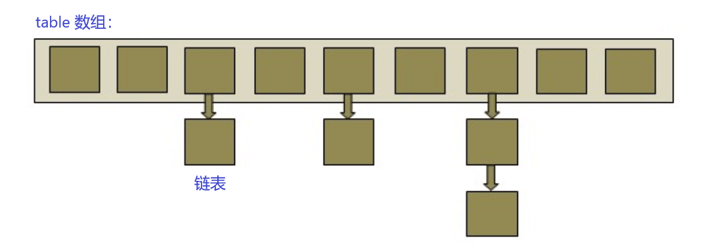

Java 中的 hashCode 和 equals
关于 hashCode
- hashCode 的存在主要是用于查找的快捷性，如 Hashtable，HashMap 等，hashCode 是用来在散列存储结构中确定对象的存储地址的。
- 如果两个对象相同，就是适用于 equals(java.lang.Object) 方法，那么这两个对象的 hashCode 一定要相同。
- 如果对象的 equals 方法被重写，那么对象的 hashCode 也尽量重写，并且产生 hashCode 使用的对象，一定要和 equals 方法中使用的一致，否则就会违反上面提到的第 2 点。
- 两个对象的 hashCode 相同，并不一定表示两个对象就相同，也就是不一定适用于 equals(java.lang.Object) 方法，只能够说明这两个对象在散列存储结构中，如 Hashtable，他们“存放在同一个篮子里“。
对 hashCode 的解读：
- hashcode 是用来查找的，如果你学过数据结构就应该知道，在查找和排序这一章有
例如内存中有这样的位置
0 1 2 3 4 5 6 7
而我有个类，这个类有个字段叫 ID，我要把这个类存放在以上 8 个位置之一，如果不用 hashcode 而任意存放，那么当查找时就需要到这八个位置里挨个去找，或者用二分法一类的算法。
但如果用 hashcode 那就会使效率提高很多。
我们这个类中有个字段叫 ID，那么我们就定义我们的 hashcode 为 ID％8，然后把我们的类存放在取得得余数那个位置。比如我们的 ID 为 9，9 除 8 的余数为 1，那么我们就把该类存在 1 这个位置，如果 ID 是 13，求得的余数是 5，那么我们就把该类放在 5 这个位置。这样，以后在查找该类时就可以通过 ID 除 8 求余数直接找到存放的位置了。
- 但是如果两个类有相同的 hashcode 怎么办那（我们假设上面的类的 ID 不是唯一的），例如 9 除以 8 和 17 除以 8 的余数都是 1，那么这是不是合法的，回答是：可以这样。那么如何判断呢？在这个时候就需要定义 equals 了。
也就是说，我们先通过 hashcode 来判断两个类是否存放某个桶里，但这个桶里可能有很多类，那么我们就需要再通过 equals 来在这个桶里找到我们要的类。
那么，重写了 equals()，为什么还要重写 hashCode() 呢？
想想，你要在一个桶里找东西，你必须先要找到这个桶啊，你不通过重写 hashcode() 来找到桶，光重写 equals() 有什么用啊。
关于 equals
equals 和 ==
== 用于比较引用和比较基本数据类型时具有不同的功能。比较基本数据类型，如果两个值相同，则结果为 true，而在比较引用时，如果引用指向内存中的同一对象，结果为 true。
equals() 作为方法，实现对象的比较。由于 == 运算符不允许我们进行覆盖，也就是说它限制了我们的表达。因此我们复写 equals() 方法，达到比较对象内容是否相同的目的。而这些通过 == 运算符是做不到的。object 类的 equals() 方法的比较规则为：如果两个对象的类型一致，并且内容一致，则返回 true，这些类有：java.io.file，java.util.Date，java.lang.string，包装类（Integer，Double等）。
String s1=new String(“abc”);
String s2=new String(“abc”);
System.out.println(s1==s2);
System.out.println(s1.equals(s2));
运行结果为：false、true
HashMap 的实现原理
HashMap概述
HashMap 是基于哈希表的Map接口的非同步实现。此实现提供所有可选的映射操作，并允许使用 null 值和 null 键。此类不保证映射的顺序，特别是它不保证该顺序恒久不变。
在 Java 编程语言中，最基本的结构就是两种，一个是数组，另外一个是模拟指针（引用），所有的数据结构都可以用这两个基本结构来构造的，HashMap 也不例外。HashMap 实际上是一个“链表散列”的数据结构，即数组和链表的结合体。

从上图中可以看出，HashMap 底层就是一个数组结构，数组中的每一项又是一个链表。当新建一个 HashMap 的时候，就会初始化一个数组。
其中 Java 源码如下：
1 | /** |
可以看出，Entry 就是数组中的元素，每个 Map.Entry 其实就是一个 key-value 对，它持有一个指向下一个元素的引用，这就构成了链表。
HashMap 实现存储和读取
1、存储
1 | public V put(K key, V value) { |
根据 hash 值得到这个元素在数组中的位置（即下标），如果数组该位置上已经存放有其他元素了，那么在这个位置上的元素将以链表的形式存放，新加入的放在链头，最先加入的放在链尾。如果数组该位置上没有元素，就直接将该元素放到此数组中的该位置上。
hash(int h) 方法根据 key 的 hashCode 重新计算一次散列。此算法加入了高位计算，防止低位不变，高位变化时，造成的 hash 冲突。
1 | static int hash(int h) { |
我们可以看到在 HashMap 中要找到某个元素，需要根据 key 的 hash 值来求得对应数组中的位置。如何计算这个位置就是 hash 算法。前面说过 HashMap 的数据结构是数组和链表的结合，所以我们当然希望这个 HashMap 里面的元素位置尽量的分布均匀些，尽量使得每个位置上的元素数量只有一个，那么当我们用 hash 算法求得这个位置的时候，马上就可以知道对应位置的元素就是我们要的，而不用再去遍历链表，这样就大大优化了查询的效率。
根据上面 put 方法的源代码可以看出，当程序试图将一个 key-value 对放入 HashMap 中时，程序首先根据该 key 的 hashCode() 返回值决定该 Entry 的存储位置：如果两个 Entry 的 key 的 hashCode() 返回值相同，那它们的存储位置相同。如果这两个 Entry 的 key 通过 equals 比较返回 true，新添加 Entry 的 value 将覆盖集合中原有 Entry 的 value，但 key 不会覆盖。如果这两个 Entry 的 key 通过 equals 比较返回 false，新添加的 Entry 将与集合中原有 Entry 形成 Entry 链，而且新添加的 Entry 位于 Entry 链的头部——具体说明继续看 addEntry() 方法的说明。
通过这种方式就可以高效的解决 HashMap 的冲突问题。
2、读取
1 | public V get(Object key) { |
从 HashMap 中 get 元素时，首先计算 key 的 hashCode，找到数组中对应位置的某一元素，然后通过 key 的 equals 方法在对应位置的链表中找到需要的元素。
3、归纳
HashMap 在底层将 key-value 当成一个整体进行处理，这个整体就是一个 Entry 对象。HashMap 底层采用一个 Entry[] 数组来保存所有的 key-value 对，当需要存储一个 Entry 对象时，会根据 hash 算法来决定其在数组中的存储位置，在根据 equals 方法决定其在该数组位置上的链表中的存储位置；当需要取出一个 Entry 时，也会根据 hash 算法找到其在数组中的存储位置，再根据 equals 方法从该位置上的链表中取出该 Entry。
HashMap 的 resize
当 hashmap 中的元素越来越多的时候，碰撞的几率也就越来越高（因为数组的长度是固定的），所以为了提高查询的效率，就要对hashmap的数组进行扩容，数组扩容这个操作也会出现在 ArrayList 中，所以这是一个通用的操作，很多人对它的性能表示过怀疑，不过想想我们的“均摊”原理，就释然了，而在 hashmap 数组扩容之后，最消耗性能的点就出现了：原数组中的数据必须重新计算其在新数组中的位置，并放进去，这就是 resize。
那么 hashmap 什么时候进行扩容呢？当 hashmap 中的元素个数超过数组大小 * loadFactor 时，就会进行数组扩容，loadFactor 的默认值为 0.75，也就是说，默认情况下，数组大小为 16，那么当 hashmap 中元素个数超过 160.75=12 的时候，就把数组的大小扩展为 216=32，即扩大一倍，然后重新计算每个元素在数组中的位置，而这是一个非常消耗性能的操作，所以如果我们已经预知 hashmap 中元素的个数，那么预设元素的个数能够有效的提高 hashmap 的性能。比如说，我们有 1000 个元素 new HashMap(1000), 但是理论上来讲 new HashMap(1024) 更合适，不过上面 annegu 已经说过，即使是 1000，hashmap 也自动会将其设置为 1024。 但是 new HashMap(1024) 还不是更合适的，因为 0.75*1000 < 1000, 也就是说为了让 0.75 * size > 1000, 我们必须这样 new HashMap(2048) 才最合适，既考虑了&的问题，也避免了 resize 的问题。
总结
HashMap的实现原理：
利用 key 的 hashCode 重新 hash 计算出当前对象的元素在数组中的下标。
存储时，如果出现 hash 值相同的 key，此时有两种情况：
(1). 如果 key 相同，则覆盖原始值。
(2). 如果 key 不同（出现冲突），则将当前的 key-value 放入链表中。获取时，直接找到 hash 值对应的下标，在进一步判断 key 是否相同，从而找到对应值。
理解了以上过程就不难明白 HashMap 是如何解决 hash 冲突的问题，核心就是使用了数组的存储方式，然后将冲突的 key 的对象放入链表中，一旦发现冲突就在链表中做进一步的对比。